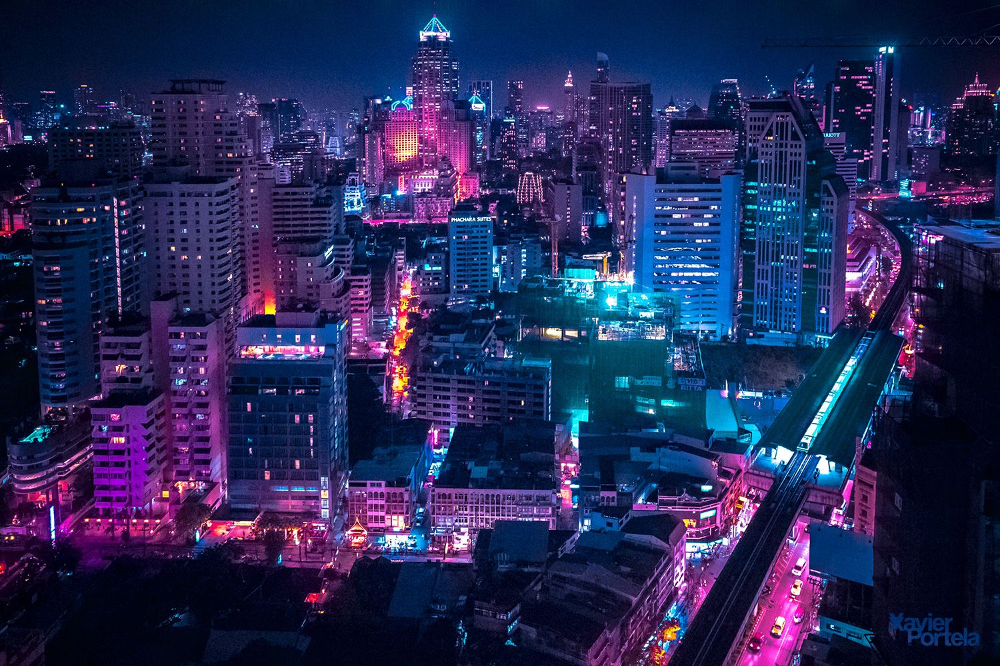
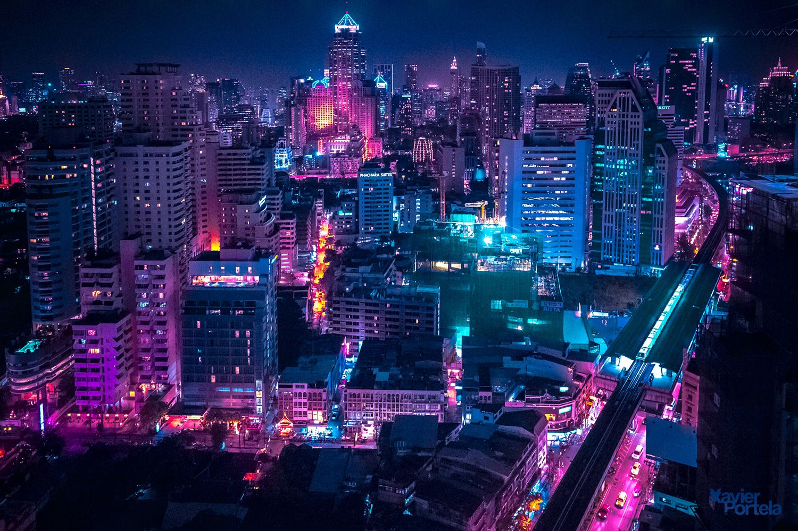

O mnie
Moje wykształcenie zdobyłem na wiodących uczelniach świata, takich jak Harvard University, MIT oraz Oxford. Dzięki temu mogę łączyć najnowsze teorie z praktycznymi umiejętnościami w tworzeniu nowoczesnych stron internetowych.
Dodatkowe informacje: Jestem entuzjastą technologii, aktywnie uczestniczę w konferencjach i warsztatach programistycznych. Lubię eksperymentować z nowymi rozwiązaniami i stale rozwijać swoje umiejętności.
Doświadczenie zawodowe
W trakcie mojej kariery miałem okazję pracować w kilku renomowanych firmach technologicznych. Oto niektóre z moich doświadczeń:
-
Software Developer - Firma Tech Solutions (2019-2021)
- Tworzenie responsywnych stron internetowych
- Współpraca z zespołem projektowym
- Optymalizacja kodu pod kątem wydajności
-
Front-end Developer - Creative Code Studio (2021-obecnie)
- Projektowanie interfejsów użytkownika
- Implementacja interaktywnych rozwiązań w JavaScript
- Testowanie i debugowanie aplikacji
Video
Galeria zdjęć
 
